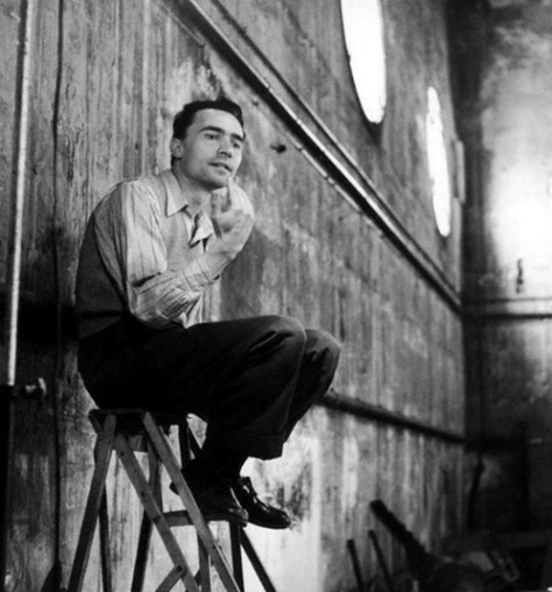
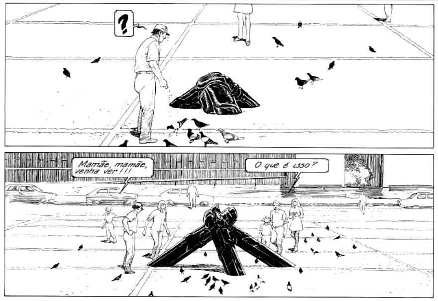

Answers to the frequently asked questions, Faqs.
This is a living document, I'm constantly updating this page with new questions and updated answers. This collection of questions and answers come from various interviews taken over the years, many of them are archived here.
Answers to commonly asked questions about audio.
What inspired you to play music?
I knew that I should want to write my own music when I was at a chiptune concert, I realized at that moment that I could write music with non-traditional and custom-made instruments.
When were you first introduced to chiptune music?
At the Gamma Festival in Montreal, Bubblyfish was the first performing chiptune act that I ever saw.
What kind of music do you play and why?
I tend to navigate the space between ambient and industrial music, I write starkly contrasted rhythmic music as I find it best to describe the environments explored in the songs.
What themes are you trying to uncover in your music?
Most of the music I write as aliceffekt is about a character's travels across the frigid scapes of this fictional world called the neauismetica, on this foreign planet called dinaisth.
Why did you decide to accompany your music with visuals?
The visuals came first, and I wrote the music to accompany the drawings. So the music merely accompany the visuals.
Do you have a set of tracks you play regularly?
I tend to write music for specific events that occur in the Neauismetica, and when I perform live, I pick moments which best fit with the other performers.
What is your approach when you perform live?
It depends, sometimes it's improvisational, like the telekinetic show. Or sometimes it's procedural, like the ehrivevnv_studies, where I merely make sure that everything is tuned properly. Sometimes I mix old songs and focus on building interesting visuals if the venue allows for it. As of late, I have been livecoding, where the song writing is done as a performance.
How do you approach songwriting?
I tend to write the song in my head entirely, and put it down in one setting. I often write music about the Neauismetica, it's a kind of mental place, a pool of endless musical idea I can visit and explore, it's where most of the songs come from.
When performing live, what's your setup like?
It varies, I've written a couple of shows to be performed with a specific synth, or a specific hardware like with the LeapMotion. Typically, I just use a combination of midi controllers and livecoding.
What instruments do you play?
None. I've never been too not much interested in music interpretation, my love is for composition and synthesis.
Where does the name Aliceffekt comes from?
Alice Effekt was a track by Drome that I liked a lot when I started writing music. My goal was to write music just like it. But it has since evolved into something else.
Answers to commonly asked questions about visual.
Which creative discipline did you begin with, and how did you shift to other mediums?
At first, I stumbled onto photo manipulation. From DeviantArt, to Raster and to Depthcore, I was moving from working with photos, to drawing, and eventually modeling. While I enjoyed visual arts, I felt that to keep sharpening the rendition of the worlds I was drawing, I needed to add a new dimension and so I began writing soundtracks to the pictures, and eventually putting all of it together in the form of websites, and games.
What is the meaning of the glyph in your avatar?
It is an old rendition of the character for blue, found in the Shuowen Jiezi, the character dictionary written by Xu Shen, 100 CE. This particular glyph has probably never been used outside of paleography. I found it to be very beautiful, and the word "blue" has a special meaning in the stories from which my handle neauoire comes from.
What is the significance of your neck tattoo?
My tattoo is three dots in the shape of a triangle, or at an equal distance from each other, it signifies audio, visual and research. I call this arrangement "trisight", it's a reminder that, being a generalist, I must constantly pull from these 3 mediums in order to create complete works.
Where does your name come from?
I began using the name online around 2005, Devine Lu Linvega comes from Davine Lu Linvega of the series Blame, by Tsutomu Nihei, which was very influential to me at the time.
Why did you choose that name?
I had been looking for a name that did not represent who I was, but instead who I would like to become. I wanted something that would serve as a reminder to put curiousity above power, that did not lock myself in the past, but would force me forward toward that ideal.
Who is Davine Lu Linvega in the book?
She was unique from other antagonists in that she doesn't seem to desire killing humans, instead, she devotes her time and energy into finding a way to access an hyper-evolved version of the Internet in the universe of BLAME. As seen in her dying words, Davine was not motivated by a pursuit for power, but rather wanted to see the Netsphere out of pure curiosity.

How are the illustrations in the Neauismetica made?
The Neauismetica is illustrated with a combination of Noodle and Moogle, the earlier images were created on the classic Macintosh with a combination of Hypercard and Graf3dscene.
Answers to commonly asked questions about research.
What are the most important concepts that you impart in your works?
A lot of my work deal with foreignness and adaptiveness, some of the most romantic ideas that one will find in my work is that of explorers wandering the remains of a long extinguished civilisation, and trying to make sense of it.
Why do you release free software?
Being away from accessible internet connectivity, the most practical mean for us to develop and release projects is via the bazaar model, where the code is often maintained by others while we are away, and so as to not capitalize unfairly on all the help that we receive, we decided to only accept donations.
Why do you release open-source software?
Being incapable of sitting through a class back in high-school, most of the learning that I was able to do was from looking at other people's sources and trying to make sense of the way they think and understand the reasons for solutioning in that particular way. For an ecosystem of tools to be truly resilient, individuals must be able to repair, maintain and inspect the software that they use.
Why is journaling important to you?
I keep records of everything I make, and everything I consume. The idea is to better understand my creative patterns, and to predict changes in mood and interest. Ultimately, the goal is to plan more efficiently, to spend my time with more efficacy and to work less.
Answers to commonly asked questions about lifestyle.
What is your background?
I was born in March of 1986. I was a notoriously distracted student in high school, I tried attending a few art classes in college before realizing that it was not the right environment to learn the things I was interested into.
I was first interested in illustration and motion graphics. I soon started writing music to complement the pictures and animations, and finally I began implementing interaction and turn these multimedia pieces into games, websites and tools.
Where do you work?
I work at a research studio aboard a sailboat, called Hundred Rabbits, where we do experiments in resilience and self-reliance using low-tech solutions.
What do you do during the daytime?
The ways in which I spend my time varies wildly from day to day, but mostly experimental research, my interests include alternative ways to store power and minimum viable solutions for technological tooling.
What is your routine?
I go to bed choosing one thing to accomplish the next day, I wake up to tackle this singular task. I tend to work only in the morning, get everything done before lunch. The afternoons, I spend mostly reading and learning things to help me solve the next day's task. I usually wake up with the sun, and sleep soon after sunset.
Where do you go to get inspired?
I share a forum with a few online friends and whenever I am looking for a new favourite thing, or some help — I know I can find it there. Everyone should build a network, a place where they can feel comfortable to experiment, show works-in-progress and exchange on the topics of art and science in a safe place among like-minded people.
Why do you think people should travel more?
I found travel to be a good catalyst toward learning new languages, for developing an interest in foreign cultures and ultimately for building empathy, curiosity and creativity.

How do you draw the line between what is published, and what stays private?
Working behind an avatar and living online through a proxy name offers a good healthy farness between the work and the self.
The Devine Lu Linvega project focuses on making explicit the reflections, and techniques for the creative process. My intimate life, my health, my friends and family are outside of the scope of this project.
What made you want to explicitly share the creative process as a project?
In my early years of journaling, I accidentally stumbled on the feedback loop that exists between the Work, and its documentation. The aspiration that transpired from documenting through the lens of fiction bordering on self-insertion, which manifested as real changes in my life, was endlessly fascinating. I thereafter modeled the Devine Lu Linvega project over things like the Divine Comedy, Etidorhpa or Alice, which are fictional travel journals.